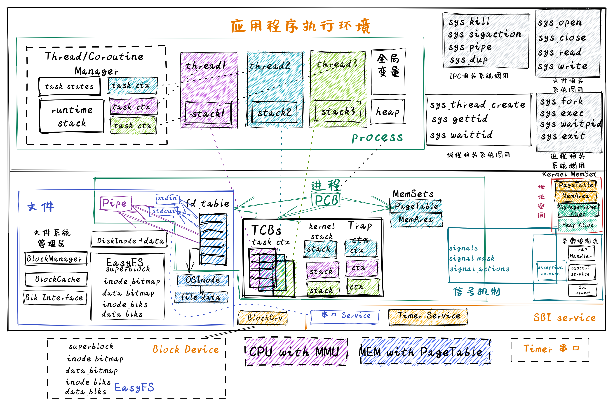
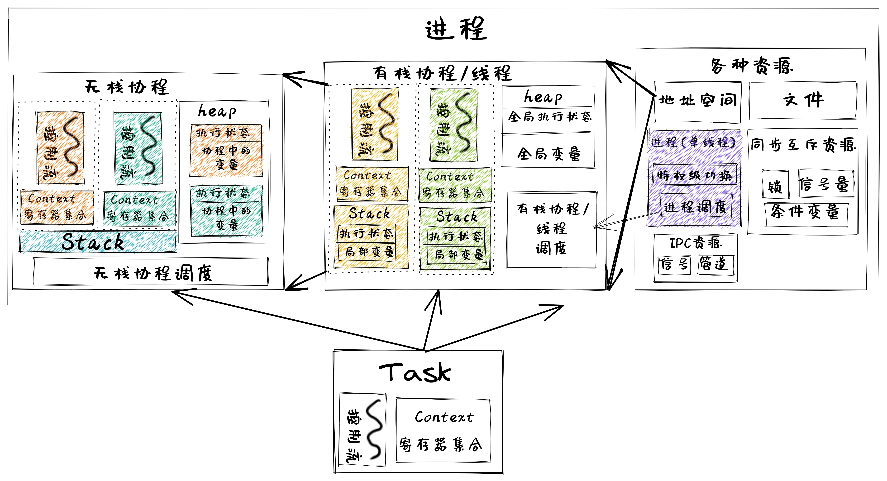
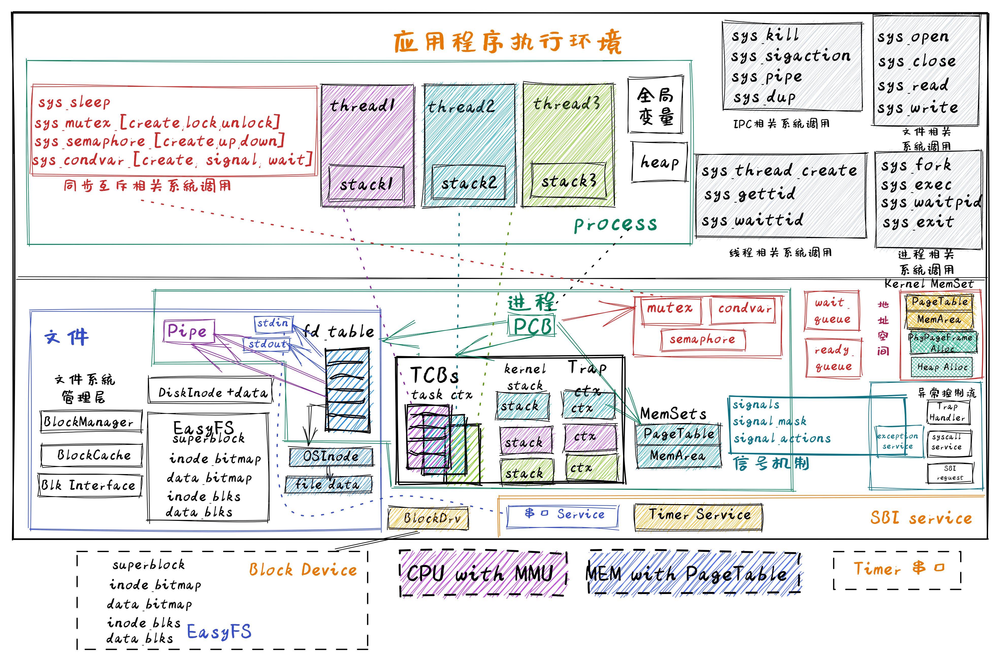

引言#
本章导读#
到本章开始之前，我们已经完成了组成应用程序执行环境的操作系统的三个重要抽象：进程、地址空间和文件，让应用程序开发、运行和存储数据更加方便和灵活。特别是操作系统通过硬件中断机制，支持分时多任务和抢占式调度机制。这样操作系统能强制打断进程的执行，及时处理I/O交互操作，从而提高整个系统的执行效率。有了进程以后，可以让操作系统从宏观层面实现多个应用的 并发执行 ，而并发是通过操作系统不断地切换进程来达到的。
对于单核处理器而言，在任意一个时刻只会有一个进程被操作系统调度，从而在处理器上执行。到目前为止的并发，仅仅是进程间的并发，而对于一个进程内部，还没有并发性的体现。而这就是线程（Thread）出现的起因：提高一个进程内的并发性。
注解
Dijkstra 教授团队设计解决并发问题的THE操作系统
早期的计算机硬件没有内存隔离保护机制，多个程序以任务（task）的形式进行执行，但各个任务之间是依次执行（批处理方式）或相互独立执行，基本没有数据共享的情况，所以还没有形成线程的概念。当多个任务需要共享数据和同步行为时，就需要扩展任务针对共享数据的执行特征，并建立相应的同步互斥机制。
在1962年，荷兰的E.W.Dijkstra 教授和他的团队正在为 Electrologica X8 计算机设计开发了 THE 操作系统 。他们观察到如果多个程序在执行中访问共享变量，可能会产生冲突和结果不确定。在E.W.Dijkstra 教授在信号量机制的研究中，提出了多个“sequential processes”可以通过信号量机制合作访问共享变量，避免冲突导致结果不确定。这里的“sequential processes”的含义就是后续的线程。
Dijkstra 教授设计出信号量机制
Dijkstra 教授带领他的小团队在设计开发THE操作系统的过程中，异步中断触发的难以重现的并发错误，让他们在调试操作系统中碰到了困难。这种困难激发了Dijkstra团队的灵感，他们设计了操作系统的分层结构来避免操作系统的复杂性负担，同时还设计了信号量机制和对应的P和V操作，来确保线程对共享变量的灵活互斥访问，并支持线程之间的同步操作。P和V是来自荷兰语单词“测试”和“增加”的首字母，是很罕见的非英语来源的操作系统术语。
贝尔实验室Victor A. Vyssotsky提出线程（thread）概念
1964年开始设计的Multics操作系统已经有进程的概念，也有多处理器并行处理的GE 645硬件设计，甚至提出了线程（ thread ）的概念。1966年，参与Multics开发的MIT博士生 Jerome Howard Saltzer在其博士毕业论文的一个注脚提到贝尔实验室的Victor A. Vyssotsky用 thread 这个名称来表示处理器（processor）执行程序（program）代码序列这个过程的抽象概念，Saltzer进一步把”进程（process）”描述为处理器执行程序代码的当前状态（即线程）和可访问的地址空间。但他们并没有建立类似信号量这样的有效机制来避免并发带来的同步互斥问题。
Brinch Hansen、Tony Hoare和Dijkstra提出管程机制
丹麦的Brinch Hansen，英国的Tony Hoare和Dijkstra并不满足于信号量来解决操作系统和应用中的并发问题。因为对于复杂一些的同步互斥问题（如哲学家问题），如果使用信号量机制不小心，容易引起死锁等错误。在 1971年的研讨会上，他们三人开始讨论管程（Monitor）的想法，希望设计一种更高级的并发管理语言结构，便于程序员开发并发程序。在1972年春天，Brinch Hansen 在他写的“操作系统原理”教科书中，提出了管程的概念，并把这一概念嵌入到了Concurrent Pascal 编程语言中，然后他和他的学生再接再厉，在PDP 11/45计算机上编写了Concurrent Pascal 编译器，并用Concurrent Pascal 编写了Solo操作系统。Brinch Hansen在操作系统和语言级并发处理方面的开创性工作影响了后续的操作系统并发处理机制（如条件变量等）和不少的编程语言并发方案。
Brinch Hansen的两句名言：
写作是对简单性的严格测试：不可能令人信服地写出无法理解的想法。
编程是用清晰的散文写文章并使它们可执行的艺术
有了进程以后，为什么还会出现线程（Thread）呢？提高整个系统的并行/并发执行效率是主要的原因。考虑如下情况，对于很多应用（以单一进程的形式运行）而言，逻辑上由多个可并行执行的任务组成，如果其中一个任务被阻塞，将导致整个进程被阻塞，这意味着不依赖该任务的其他任务也被阻塞，然而它们实际上本不应该受到影响。这就降低了系统的并发执行效率。
举个具体的例子，我们平常用编辑器来编辑文本内容的时候，都会有一个定时自动保存的功能，即把当前文档内容保存到磁盘上。假设磁盘性能导致编辑器自动保存的过程较慢，并影响到整个进程被阻塞，这就会影响到用户编辑文档的人机交互体验：即用户只有等到磁盘写入操作完成后，操作系统重新调度该进程运行，用户才可继续编辑文档。
如果我们把一个进程内的多个可并行执行的任务通过一种更细粒度的方式让操作系统进行调度，那么就可以在进程内实现并发执行。在上面的例子中，负责保存文档内容的任务与负责编辑文档的任务可以并发执行，不会出现一个被阻塞的任务导致其它任务都阻塞的情况。这种任务就是一种更细粒度的调度对象，也就是我们这里说的线程。
线程定义#
简单地说，线程是进程的组成部分，进程可包含1 – n个线程，属于同一个进程的线程共享进程的资源，比如地址空间，打开的文件等。线程基本上由线程ID、执行状态、当前指令指针(PC)、寄存器集合和栈组成。线程是可以被操作系统或用户态调度器独立调度（Scheduling）和分派（Dispatch）的基本单位。
在本章之前，进程是程序的基本执行实体，是程序对某数据集合进行操作的一次执行过程，是系统进行资源（处理器，地址空间和文件等）分配和调度的基本单位。在有了线程后，对进程的定义也要调整了，进程是线程的资源容器，线程成为了程序的基本执行实体。
提示
线程与进程的区别
注：下面的比较是把以线程为调度对象的操作系统作为分析对象：
进程间相互独立（即资源隔离），同一进程的各线程间共享进程的资源（即资源共享）；
子进程和父进程有不同的地址空间和资源，而多个线程（没有父子关系）则共享同一所属进程的地址空间和资源；
每个线程有其自己的执行上下文（线程ID、程序计数器、寄存器集合和执行栈），而进程的执行上下文包括其管理的所有线程的执行上下文和地址空间（故同一进程下的线程间上下文切换比进程间上下文切换要快）；
线程是一个可调度/分派/执行的实体（线程有就绪、阻塞和运行三种基本执行状态），进程不是可调度/分派/执行的的实体，而是线程的资源容器；
进程间通信需要通过IPC机制（如管道等）， 属于同一进程的线程间可以共享“即直接读写”进程的数据，但需要同步互斥机制的辅助，避免出现数据不一致性以及不确定计算结果的问题。
同步互斥#
在上面提到了数据不一致性、不确定的计算结果，意味在操作系统的执行过程中，可能存在并发问题，并导致程序或操作系统执行失败。我们先给出 线程的数据一致性 的定义：在单处理器（即只有一个核的CPU）下，如果某线程更新了一个可被其他线程读到的共享数据，那么后续其他线程都能读到这个最新被更新的共享数据。当多个线程共享同一进程的地址空间时，每个线程都可以访问属于这个进程的数据（全局变量）。如果每个线程使用到的变量都是其他线程不会读取或者修改的话，各个线程访问的变量与预期结果一样，那么就不存在一致性问题。如果变量是只读的，多个线程读取该变量与预期结果一致，也不会有一致性问题。
但是，当某些线程在修改变量，而其他线程在读取这个变量时，由于线程之间的执行顺序不能提前预知（取决于操作系统的调度），导致各个线程对同一变量的读写操作序列不确定，这就会导致不同线程可能会看到与预期结果不一样的值，这就出现了数据不一致性的问题，而且每次执行的结果不确定。我们把这种两个或多个线程在竞争访问同一资源时，执行结果取决于它们的不可预知的执行顺序的情况称为 线程的竞态条件（race condition）。竞态条件是一种常见的并发问题，可能导致应用程序或操作系统执行失败。
出现线程的数据不一致问题和竞态条件问题的根本原因是 调度的不可控性 ：即读写共享变量的代码片段会随时可能被操作系统调度和切换。先看看如下的伪代码例子：
1//全局共享变量 NUM初始化为 0
2static mut NUM : usize = 0;
3...
4
5//主进程中的所有线程都会执行如下的核心代码
6unsafe { NUM = NUM + 1; }
7...
8
9
10//所有线程执行完毕后，主进程显示num的值
11unsafe {
12 println!("NUM = {:?}", NUM);
13}
如果线程的个数为 n ，那么最后主进程会显示的数应该是多少呢？ 也许同学觉得应该也是 n ，但现实并不是这样。为了了解事实真相，我们首先必须了解Rust编译器对 num = num + 1; 这一行源代码生成的汇编代码序列。
1# 假设NUM的地址为 0x1000
2# unsafe { NUM = NUM + 1; } 对应的汇编代码如下
3addi x6, x0, 0x1000 # addr 100: 计算NUM的地址
4 # 由于时钟中断可能会发生线程切换
5ld x5, 0(x6) # addr 104: 把NUM的值加载到x5寄存器中
6 # 由于时钟中断可能会发生线程切换
7addi x5, x5, 1 # addr 108: x5 <- x5 + 1
8 # 由于时钟中断可能会发生线程切换
9sd x5, 0(x6) # addr 112: 把NUM+1的值写回到NUM地址中
在这个例子中，一行Rust源代码其实被Rust编译器生成了四行RISC-V汇编代码。如果多个线程在操作系统的管理和调度下都执行这段代码，那么在上述四行汇编代码之间（即第4，6，8行的地方）的时刻可能产生时钟中断，并导致线程调度和切换。
设有两个线程，线程A先进入上述汇编代码区，将要把 NUM 增加一，为此线程A将 NUM 的值（假设它这时是 0 ）加载到 x5 寄存器中，然后执行加一操作，此时 x5 = 1 。这时时钟中断发生，操作系统将当前正在运行的线程A的上下文（它的程序计数器、寄存器，包括 x5 等）保存到线程控制块（在内存中）中。
再接下来，线程B被选中运行，并进入同一段代码。它也执行了前两条指令，获取 NUM 的值（此时仍为 0 ）并将其放入 x5 中，线程B继续执行接下来指令，将 x5 加一，然后将 x5 的内容保存到 NUM （地址 0x1000 ）中。因此，全局变量 NUM 现在的值是 1 。
最后又发生一次线程上下文切换，线程A恢复运行，此时的 x5=1，现在线程A准备执行最后一条 sd 指令，将 x5 的内容保存到 NUM （地址 0x1000 ）中，NUM 再次被设置为 1 。
简单总结，这两个线程执行的结果是：增加 NUM 的代码被执行两次，初始值为 0 ，但是结果为 1 。而我们一般理解这两个线程执行的“正确”结果应该是全局变量 NUM 等于 2 。
注解
并发相关术语
共享资源（shared resource）：不同的线程/进程都能访问的变量或数据结构。
临界区（critical section）：访问共享资源的一段代码。
竞态条件（race condition）：多个线程/进程都进入临界区时，都试图更新共享的数据结构，导致产生了不期望的结果。
不确定性（indeterminate）： 多个线程/进程在执行过程中出现了竞态条件，导致执行结果取决于哪些线程在何时运行，即执行结果不确定，而开发者期望得到的是确定的结果。
原子性（atomic）：一系列操作要么全部完成，要么一个都没执行，不会看到中间状态。在数据库领域，具有原子性的一系列操作称为事务（transaction）。
互斥（mutual exclusion）：一种原子性操作，能保证同一时间只有一个线程进入临界区，从而避免出现竞态条件，并产生确定的预期执行结果。
同步（synchronization）：多个并发执行的进程/线程在一些关键点上需要互相等待，这种相互制约的等待称为进程/线程同步。
死锁（dead lock）：一个线程/进程集合里面的每个线程/进程都在等待只能由这个集合中的其他一个线程/进程（包括他自身）才能引发的事件，这种情况就是死锁。
饥饿（hungry）：指一个可运行的线程/进程尽管能继续执行，但由于操作系统的调度而被无限期地忽视，导致不能执行的情况。
在后续的章节中，会大量使用上述术语，如果现在还不够理解，没关系，随着后续的一步一步的分析和实验，相信大家能够掌握上述术语的实际含义。
为了解决数据不一致问题和竞态条件问题，操作系统需要提供一些保障机制（比如互斥、同步等），无论操作系统如何调度（当然需要是正常情况下的调度）这些对共享数据进行读写的线程，各个线程都能得到预期的共享数据的正确访问结果。操作系统中常见的同步互斥机制包括：互斥锁（Mutex Lock）、信号量（Semaphore）、条件变量（Conditional Variable）等。
互斥锁#
互斥锁是操作系统中用于保护共享资源的机制。互斥锁能够确保在任何时候只有一个线程访问共享资源，从而避免资源竞争导致的数据不一致的问题。可以使用Rust标准库中的 std::sync::Mutex 类型来实现互斥锁。下面是一个使用互斥锁保护共享变量的示例：
1 use std::sync::{Arc, Mutex};
2 use std::thread;
3
4 fn main() {
5 // 创建一个可变的整数并将其包装在 Mutex 中
6 let data = Arc::new(Mutex::new(0));
7
8 // 创建两个线程，并传递 `data` 的 Arc 实例给它们
9 let data_clone = data.clone();
10 let handle1 = thread::spawn(move || {
11 let mut data = data_clone.lock().unwrap();
12 *data += 1;
13 });
14
15 let data_clone = data.clone();
16 let handle2 = thread::spawn(move || {
17 let mut data = data_clone.lock().unwrap();
18 *data += 1;
19 });
20
21 // 等待两个线程结束
22 handle1.join().unwrap();
23 handle2.join().unwrap();
24
25 // 输出结果
26 println!("Result: {}", *data.lock().unwrap());
27 }
在上面的代码中，两个线程都会尝试访问 data 变量，但是因为它被包装在了 Mutex 中，所以只有一个线程能够获取锁并访问变量。在获取互斥锁的时候，线程会被挂起，直到另一个线程释放了锁。最终的输出结果是 2。
条件变量#
条件变量是操作系统中的一种同步原语，可用于在多个线程之间进行协作，即允许一个线程在另一个线程完成某些操作之前等待。条件变量与互斥锁经常一起使用，以保证在同一时刻只有一个线程在访问共享资源。
在 Rust 中，条件变量是由 std::sync::Condvar 结构体表示的。条件变量需要配合互斥体（由 std::sync::Mutex 结构体表示）使用，因为条件变量用于在互斥体保护的条件下通知等待的线程。
1 fn main() {
2 use std::sync::{Arc, Condvar, Mutex};
3 use std::thread;
4
5 let pair = Arc::new((Mutex::new(false), Condvar::new()));
6 let pair2 = Arc::clone(&pair);
7
8 // Inside of our lock, spawn a new thread, and then wait for it to start.
9 thread::spawn(move || {
10 let (lock, cvar) = &*pair2;
11 let mut started = lock.lock().unwrap();
12 *started = true;
13 // We notify the condvar that the value has changed.
14 cvar.notify_one();
15 });
16
17 // Wait for the thread to start up.
18 let (lock, cvar) = &*pair;
19 let mut started = lock.lock().unwrap();
20 while !*started {
21 started = cvar.wait(started).unwrap();
22 }
23 }
这是一个使用 Rust 中的条件变量（Condvar）和互斥锁（Mutex）来同步两个线程进行协作的示例。在这个示例中，新线程通过更改布尔值并通知条件变量来发送信号，而主线程则使用条件变量来等待信号。首先，它定义了一个元组 (Mutex<bool>, Condvar)，并使用 Arc（原子引用计数）将其包装在一个可共享的指针中。这个指针有两个副本，因此两个线程都可以访问这个元组。然后，它启动了一个新的线程，并在这个线程内部使用互斥锁来更改共享的布尔值。最后，它使用条件变量来等待这个布尔值被更改，然后退出循环。
信号量#
信号量是操作系统中的一种同步原语，用于在多个线程或进程之间共享资源时进行互斥访问。它通常是一个整数值，用于计数指定数量的资源可用。当一个线程需要使用资源时，它会执行信号量的 acquire 操作，如果信号量的值小于等于零，则线程将被挂起，（直到信号量的值变为正数，则会被唤醒）；否则将信号量的值减一，操作正常返回。另一方面，当一个线程完成使用资源后，它可以执行信号量的 release 操作，将信号量的值加一，并唤醒一个或所有挂起的线程。Rust 标准库中没有信号量类型，但我们可以用Mutex和Condvar来构造信号量类型。
1 use std::sync::{Condvar, Mutex};
2
3 pub struct Semaphore {
4 condvar: Condvar,
5 counter: Mutex<isize>,
6 }
7
8 impl Semaphore {
9 pub fn new(var: isize) -> Semaphore {
10 Semaphore {
11 condvar: Condvar::new(),
12 counter: Mutex::new(var),
13 }
14 }
15 pub fn acquire(&self) {
16 // gain access to the atomic integer
17 let mut count = self.counter.lock().unwrap();
18
19 // wait so long as the value of the integer <= 0
20 while *count <= 0 {
21 count = self.condvar.wait(count).unwrap();
22 }
23
24 // decrement our count to indicate that we acquired
25 // one of the resources
26 *count -= 1;
27 }
28 pub fn release(&self) {
29 // gain access to the atomic integer
30 let mut count = self.counter.lock().unwrap();
31
32 // increment its value
33 *count += 1;
34
35 // notify one of the waiting threads
36 self.condvar.notify_one();
37 }
38 }
我们构造的 Semaphore 类型包含了三个方法：
new(var) 方法创建一个信号量，并初始化信号量值 counter`的为 `var；
acquire() 方法将信号量值减一，如果信号量的值已经为零，则线程通过条件变量 condvar 的 wait 操作将自己挂起；
release() 方法将信号量值加一，并通过条件变量 condvar 的 notify_one 操作唤醒一个挂起线程。
有了信号量，我们就可以建立使用信号量的示例程序，该程序创建了三个线程，每个线程都会调用 acquire 方法获取信号量，然后输出一条消息，最后在信号量上调用 release 方法释放信号量。
1 use std::sync::Arc;
2 use std::thread;
3 fn main() {
4 //let sem = Semaphore::new(1);
5 // 创建信号量，并设置允许同时访问的线程数为 2。
6 let semaphore = Arc::new(Semaphore::new(2));
7
8 // 创建三个线程。
9 let threads = (0..3)
10 .map(|i| {
11 let semaphore = semaphore.clone();
12 thread::spawn(move || {
13 // 在信号量上调用 acquire 方法获取信号量。
14 semaphore.acquire();
15
16 // 输出消息。
17 println!("Thread {}: acquired semaphore", i);
18
19 // 模拟执行耗时操作。
20 thread::sleep(std::time::Duration::from_secs(1));
21
22 // 在信号量上调用 release 方法释放信号量。
23 println!("Thread {}: releasing semaphore", i);
24 semaphore.release();
25 })
26 })
27 .collect::<Vec<_>>();
28
29 // 等待所有线程完成。
30 for thread in threads {
31 thread.join().unwrap();
32 }
33 }
这段代码创建了一个名为 semaphore 的信号量，并设置允许并发操作的线程数为 2。然后创建了三个线程，在每个线程中，首先调用信号量的 acquire` 方法来尝试获取信号量。如果获取了信号量，就可以输出一条消息，并模拟执行一些耗时操作，最后调用信号量的 release 方法来释放信号量，从而让其他线程有机会获取信号量并继续执行。该示例运行的结果如下所示：
Thread 0: acquired semaphore
Thread 1: acquired semaphore
Thread 0: releasing semaphore
Thread 1: releasing semaphore
Thread 2: acquired semaphore
Thread 2: releasing semaphore
上述的示例都是在用户态实现的应用程序，其中的Thread、Mutex和Condvar需要应用程序所在的操作系统（这里就是Linux）提供相应的支持。在本章中，我们会在自己写的操作系统中实现Thread、Mutex、Condvar和Semaphore 机制，从而对同步互斥的原理有更加深入的了解，对应操作系统如何支持这些同步互斥底层机制有全面的掌握。
实践体验#
获取本章代码：
$ git clone https://github.com/rcore-os/rCore-Tutorial-v3.git
$ cd rCore-Tutorial-v3
$ git checkout ch8
在 qemu 模拟器上运行本章代码：
$ cd os
$ make run
内核初始化完成之后就会进入shell程序，我们可以体会一下线程的创建和执行过程。在这里我们运行一下本章的测例 threads ：
>> threads
aaa....bbb...ccc...
thread#1 exited with code 1
thread#2 exited with code 2
thread#3 exited with code 3
main thread exited.
Shell: Process 2 exited with code 0
>>
它会有4个线程在执行，等前3个线程执行完毕后，主线程退出，导致整个进程退出。
此外，在本章的操作系统支持通过互斥来执行“哲学家就餐问题”这个应用程序：
>> phil_din_mutex
time cost = 7273
'-' -> THINKING; 'x' -> EATING; ' ' -> WAITING
#0: ------- xxxxxxxx---------- xxxx----- xxxxxx--xxx
#1: ---xxxxxx-- xxxxxxx---------- x---xxxxxx
#2: ----- xx---------xx----xxxxxx------------ xxxx
#3: -----xxxxxxxxxx------xxxxx-------- xxxxxx-- xxxxxxxxx
#4: ------ x------ xxxxxx-- xxxxx------ xx
#0: ------- xxxxxxxx---------- xxxx----- xxxxxx--xxx
>>
我们可以看到5个代表“哲学家”的线程通过操作系统的 Mutex 互斥机制在进行“THINKING”、“EATING”、“WAITING”的日常生活。没有哲学家由于拿不到筷子而饥饿，也没有相邻的两个哲学家同时拿到同一个筷子。
注解
哲学家就餐问题
计算机科学家Dijkstra提出并解决的哲学家就餐问题是经典的进程同步互斥问题。哲学家就餐问题描述如下：
有5个哲学家共用一张圆桌，分别坐在周围的5张椅子上，在圆桌上有5个碗和5只筷子，他们的生活方式是交替地进行思考和进餐。平时，每个哲学家进行思考，饥饿时便试图拿起其左右最靠近他的筷子，只有在他拿到两只筷子时才能进餐。进餐完毕，放下筷子继续思考。
本章代码树#
达科塔盗龙操作系统 – Thread&Coroutine OS的总体结构如下图所示：
{kind=link}
从上图中可以看到，Thread&Coroutine OS 增加了在用户态管理的用户态线程/用户态协程，以及在内核态管理的用户态线程。对于用户态管理的用户态线程和协程，新增了一个运行在用户态的 Thread/Coroutine Manager 运行时库（Runtime Lib），这个不需要改动操作系统内核。 而对于内核态管理的用户态线程，则需要新增线程控制块（Thread Control Block, TCB）结构，把之前进程控制块（Process Control Block, PCB）中与执行相关的内容剥离给了线程控制块。同时，进一步重构进程控制块，把线程控制块列表作为进程控制块中的一部分资源，这样一个进程控制块就可以管理多个线程了。最后还提供与线程相关的系统调用，如创建线程、等待线程结束等，以支持多线程应用的执行。
这里，我们可以把进程、线程和协程中的控制流执行看出是一种任务（Task）的执行过程，如下图所示：
{kind=link}
在上图中，可以看出进程包含线程（即有栈协程），线程包含无栈协程，形成一个层次包含关系。而与它们执行相关的重点是切换控制流，即任务切换，关键就是保存于恢复任务上下文，任务上下文的核心部分就是每个任务所分时共享的硬件寄存器内容。对于无栈协程，切换这些寄存器就够了；对于拥有独立栈的线程而言，还需进一步切换线程栈；如果是拥有独立地址空间的进程而言，那还需进一步切换地址空间（即切换页表）。
进一步增加了同步互斥机制的慈母龙操作系统 – SyncMutexOS的总体结构如下图所示：
{kind=link}
在上图中，可以看出在进程控制块中，增加了互斥锁（Mutex）、信号量（Semaphore）和条件变量（Condvar）这三种资源，并提供了与这三种同步互斥资源相关的系统调用。这样多线程应用就可以使用这三种同步互斥机制来解决各种同步互斥问题，如生产者消费者问题、哲学家问题、读者写者问题等。
位于 ch8 分支上的慈母龙操作系统 – SyncMutexOS的源代码如下所示：
1 .
2 ├── ...
3 ├── os
4 │ ├── ...
5 │ └── src
6 │ ├── ...
7 │ ├── sync (新增：同步互斥子模块 sync)
8 │ │ ├── mod.rs
9 │ │ ├── condvar.rs（条件变量实现）
10 │ │ ├── mutex.rs （互斥锁实现）
11 │ │ └── semaphore.rs （信号量实现）
12 │ ├── syscall
13 │ │ ├── ...
14 │ │ ├── mod.rs（增加与线程/同步互斥相关的系统调用定义）
15 │ │ ├── sync.rs（增加与同步互斥相关的系统调用具体实现）
16 │ │ └── thread.rs（增加与线程相关的系统调用具体实现）
17 │ ├── task (重构进程管理子模块，以支持线程)
18 │ │ ├── ...
19 │ │ ├── process.rs（包含线程控制块的进程控制块）
20 │ │ └── task.rs（线程控制块）
21 │ ├── timer.rs （增加支持线程睡眠一段时间的功能）
22 │ └── trap
23 │ ├── context.rs
24 │ ├── mod.rs
25 │ └── trap.S
26 └── user
27 ├── ...
28 ├── src
29 │ ├── bin (新增各种多线程/协程/同步互斥测试用例)
30 │ │ ├── ...
31 │ │ ├── early_exit2.rs（多线程测例）
32 │ │ ├── early_exit.rs（多线程测例）
33 │ │ ├── eisenberg.rs （面向n个线程的Eisenberg&McGuire 软件同步互斥示例）
34 │ │ ├── mpsc_sem.rs（基于信号量的生产者消费者问题示例）
35 │ │ ├── peterson.rs（面向2个线程的Peterson软件同步互斥示例）
36 │ │ ├── phil_din_mutex.rs（基于互斥锁的哲学家就餐问题示例）
37 │ │ ├── race_adder_arg.rs（具有竞态条件错误情况的多线程累加计算示例）
38 │ │ ├── race_adder_atomic.rs（基于原子变量的多线程累加计算示例）
39 │ │ ├── race_adder_loop.rs（具有竞态条件错误情况的多线程累加计算示例）
40 │ │ ├── race_adder_mutex_blocking.rss（基于可睡眠互斥锁的多线程累加计算示例）
41 │ │ ├── race_adder_mutex_spin.rs（基于忙等互斥锁的多线程累加计算示例）
42 │ │ ├── race_adder.rs（具有竞态条件错误情况的多线程累加计算示例）
43 │ │ ├── stackful_coroutine.rs（用户态多线程（有栈协程）管理运行时库和多线程示例）
44 │ │ ├── stackless_coroutine.rs（用户态无栈协程管理运行时库和多协程示例）
45 │ │ ├── sync_sem.rs（基于信号量的多线程同步示例）
46 │ │ ├── test_condvar.rs（基于条件变量和互斥锁的多线程同步示例）
47 │ │ ├── threads_arg.rs（带参数的多线程示例）
48 │ │ ├── threads.rs（无参数的多线程示例）
49 │ │ └── usertests.rs（运行所有应用的示例）
50 │ └── ...
本章代码导读#
在本章实现支持多线程的达科塔盗龙操作系统 – Thread&Coroutine OS过程中，需要考虑如下一些关键点：线程的总体结构、管理线程执行的线程控制块数据结构、以及对线程管理相关的重要函数：线程创建和线程切换。这些关键点既可以在用户态实现，也可在内核态实现。
线程设计与实现#
在 用户态的线程管理 一节中讲述了设计实现用户态线程管理运行时库的过程，这其实是第三章中 任务切换的设计与实现 和 协作式调度 的一种更简单的用户态实现。首先是要构建多线程的基本执行环境，即定义线程控制块数据结构，包括线程执行状态、线程执行上下文（使用的通用寄存器集合）等。然后是要实现线程创建和线程切换这两个关键函数。这两个函数的关键就是构建线程的上下文和切换线程的上下文。当线程启动后，不会被抢占，所以需要线程通过 yield_task 函数主动放弃处理器，从而把处理器控制权交还给用户态线程管理运行时库，让其选择其他处于就绪态的线程执行。
在 内核态的线程管理 一节中讲述了在操作系统内部设计实现内核态线程管理的实现过程，这其实基于第三章中 任务切换的设计与实现 和 抢占式调度 的进一步改进实现。这涉及到对进程的重构，把以前的线程管理相关数据结构转移到线程控制块中，并把线程作为一种资源，放在进程控制块中。这样与线程相关的关键部分包括：
任务控制块 TaskControlBlock ：表示线程的核心数据结构
任务管理器 TaskManager ：管理线程集合的核心数据结构
处理器管理结构 Processor ：用于线程调度，维护线程的处理器状态
线程切换：涉及特权级切换和线程上下文切换
进程控制块和线程控制块的主要部分如下所示：
1 // os/src/task/tasks.rs
2 // 线程控制块
3 pub struct TaskControlBlock {
4 pub process: Weak<ProcessControlBlock>, //线程所属的进程控制块
5 pub kstack: KernelStack,//任务（线程）的内核栈
6 inner: UPSafeCell<TaskControlBlockInner>,
7 }
8 pub struct TaskControlBlockInner {
9 pub res: Option<TaskUserRes>, //任务（线程）用户态资源
10 pub trap_cx_ppn: PhysPageNum,//trap上下文地址
11 pub task_cx: TaskContext,//任务（线程）上下文
12 pub task_status: TaskStatus,//任务（线程）状态
13 pub exit_code: Option<i32>,//任务（线程）退出码
14 }
15 // os/src/task/process.rs
16 // 进程控制块
17 pub struct ProcessControlBlock {
18 pub pid: PidHandle, //进程ID
19 inner: UPSafeCell<ProcessControlBlockInner>,
20 }
21 pub struct ProcessControlBlockInner {
22 pub tasks: Vec<Option<Arc<TaskControlBlock>>>, //线程控制块列表
23 ...
24 }
接下来就是相关的线程管理功能的设计与实现了。首先是线程创建，即当一个进程执行中发出系统调用 sys_thread_create` 后，操作系统就需要在当前进程控制块中创建一个线程控制块，并在线程控制块中初始化各个成员变量，建立好进程和线程的关系等，关键要素包括：
线程的用户态栈：确保在用户态的线程能正常执行函数调用
线程的内核态栈：确保线程陷入内核后能正常执行函数调用
线程的跳板页：确保线程能正确的进行用户态<–>内核态切换
线程上下文：即线程用到的寄存器信息，用于线程切换
创建线程的主要代码如下所示：
1 pub fn sys_thread_create(entry: usize, arg: usize) -> isize {
2 // 创建新线程
3 let new_task = Arc::new(TaskControlBlock::new(...
4 // 把线程加到就绪调度队列中
5 add_task(Arc::clone(&new_task));
6 // 把线程控制块加入到进程控制块中
7 let tasks = &mut process_inner.tasks;
8 tasks[new_task_tid] = Some(Arc::clone(&new_task));
9 //建立trap/task上下文
10 *new_task_trap_cx = TrapContext::app_init_context(
11 entry,
12 new_task_res.ustack_top(),
13 kernel_token(),
14 ...
而关于线程切换和线程调度这两部分在之前已经介绍过。线程切换与第三章中介绍的特权级上下文切换和任务上下文切换的设计与实现是一致的，线程执行中的调度切换过程与第六章中介绍的进程调度机制是一致的。这里就不再进一步赘述了。
同步互斥机制的设计实现#
在实现支持同步互斥机制的慈母龙操作系统 – SyncMutexOS中，包括三种同步互斥机制，在 互斥锁 一节中讲述了互斥锁的设计与实现，在 信号量机制 一节中讲述了信号量的设计与实现，在 条件变量机制 一节中讲述了条件变量的设计与实现。无论哪种同步互斥机制，都需要确保操作系统任意抢占线程，调度和切换线程的执行，都可以保证线程执行的互斥需求和同步需求，从而能够得到可预测和可重现的共享资源访问结果。这三种用于多线程的同步互斥机制所对应的内核数据结构都在进程控制块中，以进程资源的形式存在。
1 // 进程控制块内部结构
2 pub struct ProcessControlBlockInner {
3 ...
4 pub mutex_list: Vec<Option<Arc<dyn Mutex>>>, // 互斥锁列表
5 pub semaphore_list: Vec<Option<Arc<Semaphore>>>, // 信号量列表
6 pub condvar_list: Vec<Option<Arc<Condvar>>>, // 条件变量列表
7 }
在互斥锁的设计实现中，设计了一个更底层的 UPSafeCell<T> 类型，用于支持在单核处理器上安全地在线程间共享可变全局变量。这个类型大致结构如下所示：
1 pub struct UPSafeCell<T> { //允许在单核上安全使用可变全局变量
2 inner: RefCell<T>, //提供内部可变性和运行时借用检查
3 }
4 unsafe impl<T> Sync for UPSafeCell<T> {} //声明支持全局变量安全地在线程间共享
5 impl<T> UPSafeCell<T> {
6 pub unsafe fn new(value: T) -> Self {
7 Self { inner: RefCell::new(value) }
8 }
9 pub fn exclusive_access(&self) -> RefMut<'_, T> {
10 self.inner.borrow_mut() //得到它包裹的数据的独占访问权
11 }
12 }
并基于此设计了 Mutex 互斥锁类型，可进一步细化为忙等型互斥锁和睡眠型互斥锁，二者的大致结构如下所示：
1 pub struct MutexSpin {
2 locked: UPSafeCell<bool>, //locked是被UPSafeCell包裹的布尔全局变量
3 }
4 pub struct MutexBlocking {
5 inner: UPSafeCell<MutexBlockingInner>,
6 }
7 pub struct MutexBlockingInner {
8 locked: bool,
9 wait_queue: VecDeque<Arc<TaskControlBlock>>, //等待获取锁的线程等待队列
10 }
在上述代码片段的第9行，可以看到挂在睡眠型互斥锁上的线程，会被放入到互斥锁的等待队列 wait_queue 中。 Mutex 互斥锁类型实现了 lock 和 unlock 两个方法完成获取锁和释放锁操作。而系统调用 sys_mutex_create 、 sys_mutex_lock 、 sys_mutex_unlock 这几个系统调用，是提供给多线程应用程序实现互斥锁的创建、获取锁和释放锁的同步互斥操作。
信号量 Semaphore 类型的大致结构如下所示：
1 pub struct Semaphore {
2 pub inner: UPSafeCell<SemaphoreInner>, //UPSafeCell包裹的内部可变结构
3 }
4
5 pub struct SemaphoreInner {
6 pub count: isize, //信号量的计数值
7 pub wait_queue: VecDeque<Arc<TaskControlBlock>>, //信号量的等待队列
8 }
在上述代码片段的第7行，可以看到挂在信号量上的线程，会被放入到信号量的等待队列 wait_queue 中。信号量 Semaphore 类型实现了 up 和 down 两个方法完成获取获取信号量和释放信号量的操作。而系统调用 sys_semaphore_create 、 sys_semaphore_up 、 sys_semaphore_down 这几个系统调用，是提供给多线程应用程序实现信号量的创建、获取和释放的同步互斥操作。
条件变量 Condvar 类型的大致结构如下所示：
1 pub struct Condvar {
2 pub inner: UPSafeCell<CondvarInner>, //UPSafeCell包裹的内部可变结构
3 }
4
5 pub struct CondvarInner {
6 pub wait_queue: VecDeque<Arc<TaskControlBlock>>,//等待队列
7 }
在上述代码片段的第6行，可以看到挂在条件变量上的线程，会被放入到条件变量的等待队列 wait_queue 中。条件变量 Condvar 类型实现了 wait 和 signal 两个方法完成获取等待条件变量和通知信号量的操作。而系统调用 sys_condvar_create 、 sys_condvar_wait 、 sys_condvar_signal 这几个系统调用，是提供给多线程应用程序实现条件变量的创建、等待和通知的同步互斥操作。
同学可能会注意到，上述的睡眠型互斥锁、信号量和条件变量的数据结构几乎相同，都会把挂起的线程放到等待队列中。但是它们的具体实现还是有区别的，这需要同学了解这三种同步互斥机制的操作原理，再看看它们的方法对的设计与实现：互斥锁的lock和unlock、信号量的up和down、条件变量的wait和signal，就可以看到它们的具体区别了。